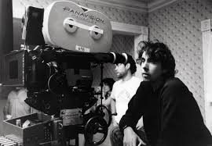
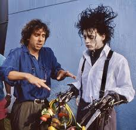
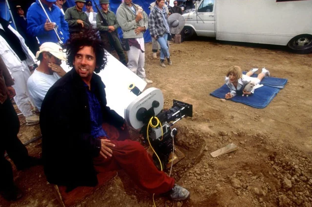
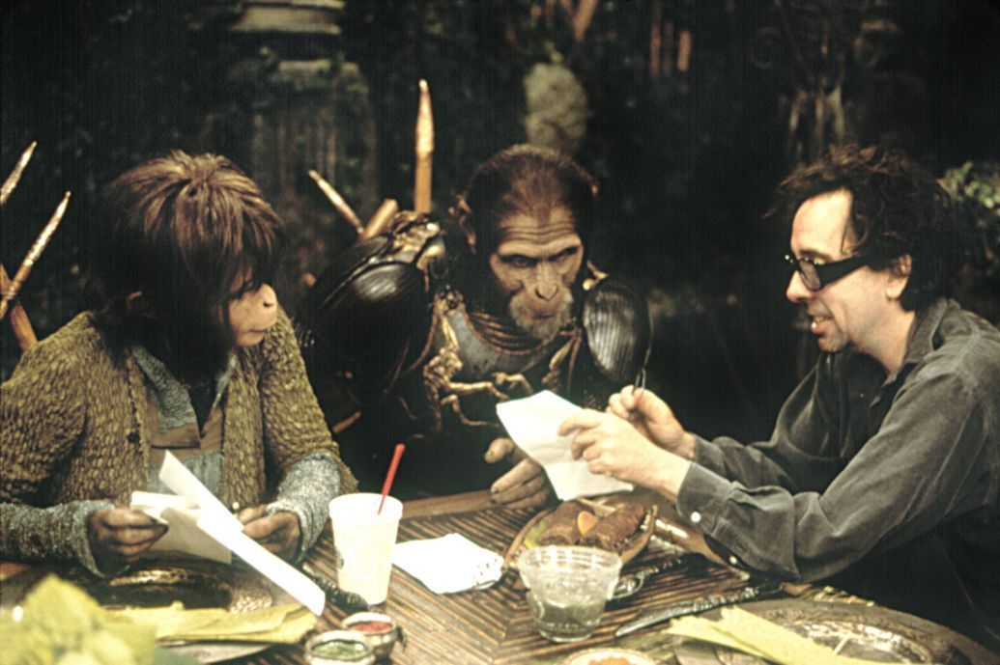
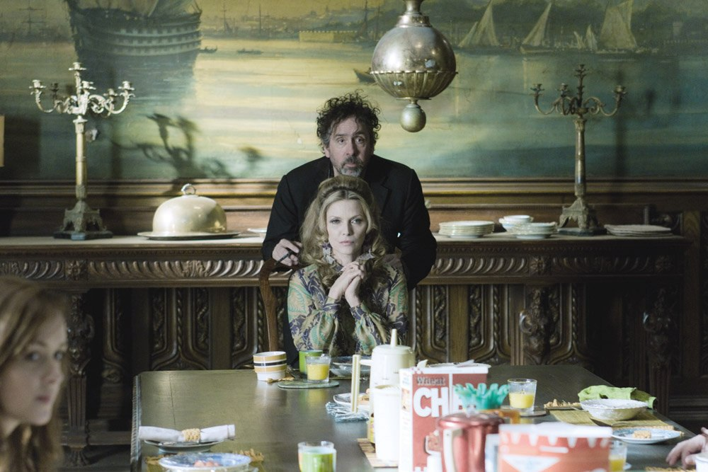
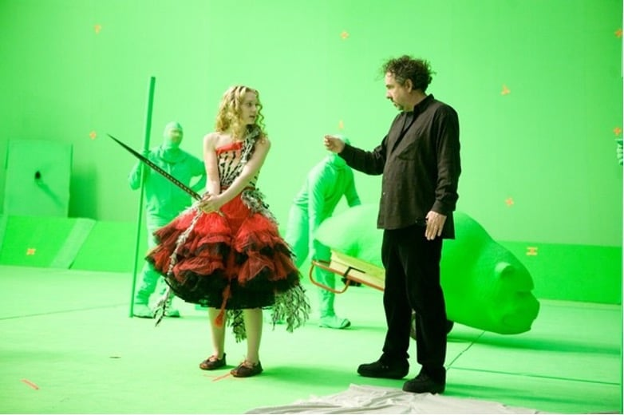

Director y productor
Burton no tardaría en introducirse dentro del gran engranaje de Hollywood, pero desde su propia manera de hacer cine. Una de sus colaboraciones fue junto a la productora y actriz Shelley Duvall, que le ofreció trabajar en un capítulo de su serie televisiva que consistía en una versión de Aladino y la lámpara maravillosa.
Gracias el éxito y reconocimiento que obtuvo en círculos profesionales por sus dos cortometrajes y de su paso por televisión, llamó la atención de Warner Bros, que se fijó en él para hacer su propia versión del superhéroe Batman, pero se canceló por el momento. La productora supo ver su talento y decidió contar con él para dirigir La gran aventura de Pee-Wee (1985), que fue su primer largometraje dentro de su carrera como director.
La película supuso todo un éxito que dio lugar a una segunda colaboración con la Warner: Beetlejuice (1988). Esta extraña y delirante historia de fantasmas sorprendió a todos,llegando a ser una de las más taquilleras del año. El proyecto se podría definir como una comedia y no tiene una trama evidente, pero está cargada de humor negro con decorados surreales y alocados y efectos especiales increíbles para la época. En definitiva, una serie de elementos que dejan entrever los cimientos de lo que es Tim Burton a día de hoy y que veremos a lo largo de su cine. Beetlejuice obtuvo un éxito sorprendente y la crítica también fue positiva. Todo esto corroboró lo que pensaba Burton: el público estaba receptivo antes las películas que se salieran de lo convencional que producía Hollywood.
La que sin duda le lanzó hacia la cima del éxito y le convirtió en uno de los directores más respetados del momento fue Batman (1989), una adaptación al cine del conocido héroe.
Años 90'
Burton era la persona más solicitada del momento y no se sentía cómodo en su nuevo papel de director estrella. Se planteaba la posibilidad de tomarse un descanso y no parecía especialmente interesado en afrontar un nuevo proyecto, y menos la secuela de Batman que le proponía la Warner.
Si el cineasta se embarcaba en una nueva aventura, sería algo más personal y autobiográfico. Por ello decidió retomar un antiguo proyecto muy íntimo, Edward Scissorhands (1990),un maravilloso cuento de hadas al estilo posmoderno que encierra muchos recuerdos y sentimientos de su juventud.
Luego, a Burton le ofrecieron producir una película que se trataba de una biografía del director de cine Edward D. Wood Jr., a quien la crítica definía como el peor director del mundo. Hablamos de Ed Wood (1994), una historia biográfica con un toque de terror que trata sobre la pasión por el cine, donde se reconstruye el Hollywood de los años cincuenta: por primera vez Burton nos muestra una versión de la realidad geográfica e histórica. Esta película fue rodada en blanco y negro, que ayudó a determinar la estética y la atmósfera del film, causó problemas con los productores, ya que, en Estados Unidos el blanco y negro se reserva sólo a producciones con gran vocación artística.
En 1996 llegó el primer gran fracaso de Tim Burton en el cine comercial: la parodia de ciencia ficción Mars Attacks!. Para esta película se inspiró en una colección de cromos con el mismo nombre, que se trataba de una serie de estampas grotescas y muy coloridas, características que se reflejarían en el filme. Se convirtió en una sátira que mostraba muchas de las influencias de Burton: los filmes de Ray Harryhausen y las películas de ciencia ficción de los años 50 y 60, entre otras.
Tras ello se produjo un parón en su carrera y aunque tuvo varios proyectos en manos durante este tiempo, Tim Burton no resurgió hasta la película Sleepy Hollow (1999). Producida esta vez por la Paramount, Burton enmendó el fracaso que tuvo con la película anterior y consiguió que esta fuera una de las películas del año.
Los 2000'
Las productoras se lanzaron con nuevos proyectos, como hizo la Fox con una nueva versión de un clásico del cine de ciencia ficción. Así inauguraba Burton una nueva década, con El planeta de los Simios (2001).
Es su obra menos burtoniana porque carece de los rasgos propios como personajes melancólicos y tristes, la utilización del expresionismo alemán o esa mezcla de terror y comedia que caracterizan sus películas. Fue muy criticado por ello, pero esta película dejó constancia que Burton es igual de competente trabajando por encargo y otros géneros lejanos a sus trabajos habituales.
En Big Fish (2003) sucede todo lo contrario. La implicación personal del director es mucho mayor que en la anterior película y muestra una gran madurez respecto a sus anteriores films. Es una película muy cercana a la sensibilidad de Burton y trata temas como el amor o el perdón.
Otra de sus obras más recordadas y aplaudidas es Charlie y la Fábrica de Chocolate(2005). Está basada en el famosísimo relato de Roald Dahl y ya existía una película en los 70, pero Burton no se limita a recrear lo que ya habíamos visto años atrás, sino que consigue crear un universo único que una vez más contiene todos los rasgos de su cine.
Después vino Sweeney Todd (2008), cuyo guion cruel e irónico está basado en el famoso musical londinense de mismo nombre que supieron trasladar perfectamente al cine. Burton nos ofrece un musical sangriento que se transforma en una historia de amor, drama y venganza que, en manos de otro director, podría haber sido un auténtico desastre. Luego, Disney empezó a plantearse la opción de realizar remakes live-action de sus clásicos animados, es decir, adaptaciones con actores reales de películas o series que originalmente eran de animación. El primer fue una versión del cuento de Lewis Carroll, Alicia en el País de las Maravillas , que vio la luz en 2010.
La siguiente sea quizás una de las películas de su filmografía que más polémicas ha traído. Hablamos de Sombras tenebrosas (2012), una adaptación de la popular serie estadounidense de mismo nombre de gran éxito en los años 60 y 70. Esta comedia con tintes góticos y humor negro es, probablemente, la más disparatada y decadente que nos ha dado el director. Hace un intento por volver a sus orígenes y reunir todos los elementos característicos de sus primeros trabajos, pero empleó una mezcla de tonos y géneros que se le fue de las manos, como si fuera la primera vez que utilizaba ese recurso. El público le acusaba de haber cambiado. Las críticas fueron negativas y en general, no gustó a la audiencia, por lo que no consiguió triunfar en esta ocasión.
Su siguiente proyecto estaba basado en la historia real de la pintora Margaret Keane, Big Eyes (2015), película con una identificación emocional que la convierte en una pequeña gran joya de su filmografía. Hace una crítica de cómo los artistas son capaces de perder su esencia a cambio de una marca y dinero y cómo pueden llegar a perder por completo su voz. En 2016 estrenó El hogar de Miss Peregrine para Niños Peculiares, basada en el aclamado best-seller de Ransom Riggs que se inspiró en su propia colección de fotografías vintage para crear la historia que, como hemos visto en su biografía, él también recopilaba por lo que no es de extrañar que les llamase la atención y las utilizara como inspiración. Los personajes e imágenes son llevados a la vida en esta mágica adaptación de Burton para Fox.
En 2019 nos trajo otro live-action, Dumbo, una adaptación de la película animada de 1941 de Walt Disney del mismo nombre. Esta película lleva su firma, con elementos propios de su particular estilo, pero no consigue ser el Burton original y fascinante de sus películas anteriores.